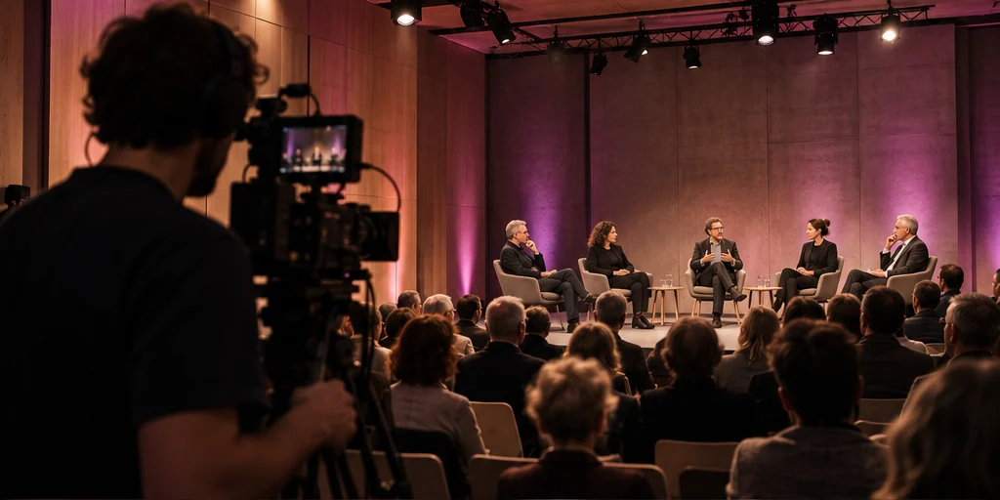

Filmproduktion
Wir besprechen mit Ihnen, welche Aufnahmen Sie benötigen, planen den Dreh und übernehmen die Kameraarbeit vor Ort.
- Interviews
- Reportagen
- Veranstaltungen
Leistungen
Wir arbeiten an politischen und gesellschaftlichen Themen. Sie können uns mit einer gesamten Produktion oder mit einzelnen Aufgaben wie einem Dreh, einem Fototermin oder dem Schnitt beauftragen.

Wir besprechen mit Ihnen, welche Aufnahmen Sie benötigen, planen den Dreh und übernehmen die Kameraarbeit vor Ort.

Wir stimmen die Motive und die Bildauswahl mit Ihnen ab, je nachdem, ob Sie die Bilder für die Presse, Ihre Website oder den Rückblick auf eine Veranstaltung brauchen.

Für die Nachbearbeitung können Sie uns auch bereits gedrehtes Material übergeben. Vor dem Schnitt klären wir, welche Fassungen und Dateiformate Sie für die Veröffentlichung benötigen.
Wir entwickeln Videoformate und produzieren einzelne Folgen oder ganze Reihen. Aus einem längeren Interview können wir zum Beispiel mehrere kurze Videos für soziale Medien schneiden.
KI-generierte Beispielbilder
Beschreiben Sie kurz Ihr Vorhaben. Geben Sie nach Möglichkeit auch Drehort und Termin an.